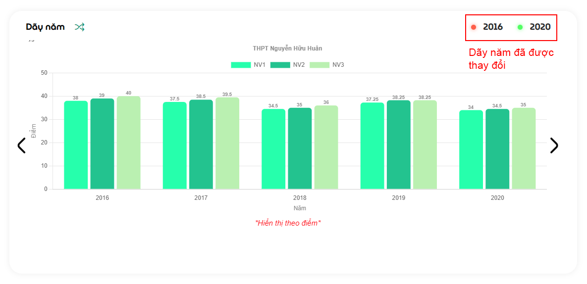
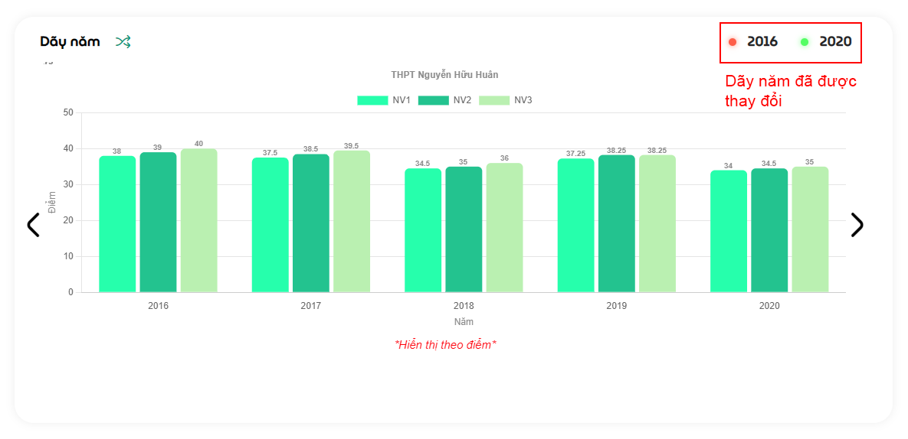
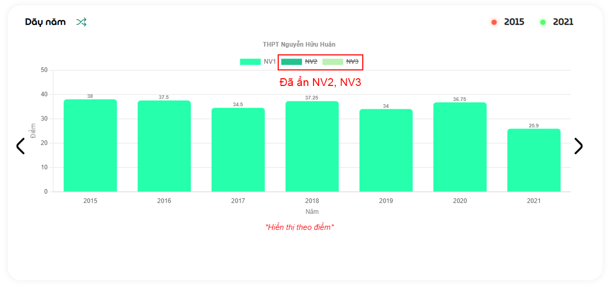
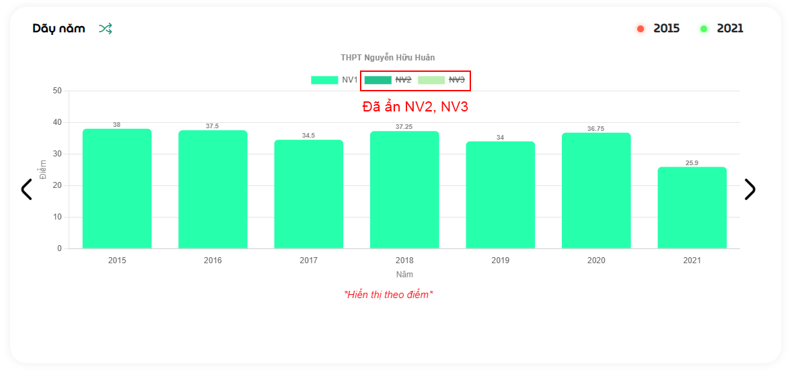
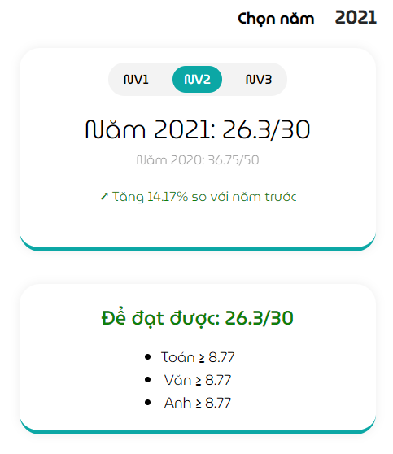
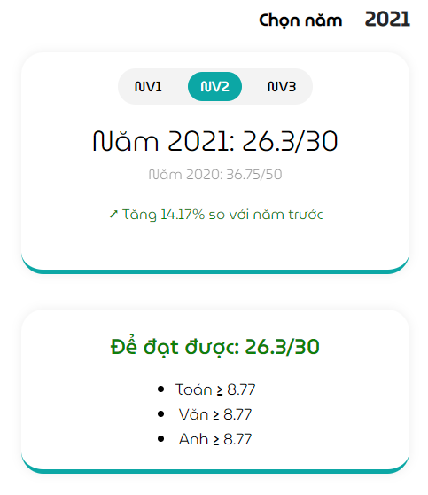
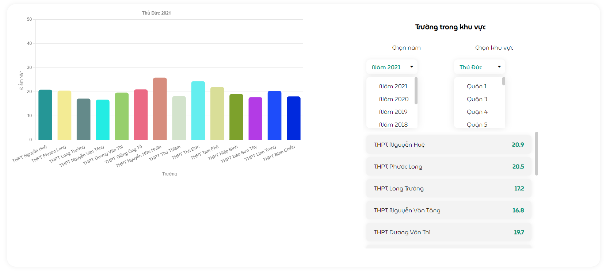

Ghi chú
Tại trang Phân tích, người dùng chỉ cần tra cứu duy nhất một tên trường, hệ thống sẽ tự động lọc ra và trình bày những số liệu chi tiết về trường được tìm dưới nhiều dạng biểu đồ khác nhau.
Biểu đồ dãy năm ¶
Phần này sẽ hiển thị điểm nguyện vọng 1, 2, 3 qua các năm dưới dạng biểu đồ cột (một năm gồm 3 cột tương ứng với 3 nguyện vọng).
- Thay đổi dãy năm (từ năm... đến năm...) ở góc trên bên phải của thẻ:
 

- Ẩn/Hiện nguyện vọng:
Hệ thống sẽ tự căn chỉnh khoảng cách và độ rộng các cột để phù hợp với giao diện người dùng.
 

- Chuyển dạng biểu đồ (cột và đường):
Đễ dàng xem được sự biến động của điểm số qua các năm hơn.

- Thay đổi số liệu hiển thị (theo điểm hoặc phần trăm)
Vì lí do điểm từ năm 2021 trở đi sẽ b không còn được nhân hệ số, nên chúng tôi đã đưa ra giải pháp so sánh bằng cách hiển thị theo phần trăm nhằm giúp cho người dùng có đánh giá chính xác hơn.


- So sánh số liệu với năm trước đó:
Với chức năng này, người dùng có thể xem được:
- Điểm nguyện vọng của năm hiện tại và năm trước đó
- So sánh tăng hay giảm bao nhiêu phần trăm so với năm trước
- Đề xuất điểm từng môn để đạt được chỉ tiêu (xem thêm tại Đề xuất cơ bản)
 

Tỉ lệ chọi ¶
Tỉ lệ chọi được hiển thị thành 2 thẻ: bên trái biểu thị chỉ tiêu, nguyện vọng và tỉ lệ chọi trong 1 năm và so sánh với năm trước đó; bên phải là biểu đồ kết hợp đường và cột chồng trình bày số liệu qua các năm (tương tự dãy năm ở trên).
Ghi chú
Các chức năng như thay đổi dãy năm, ẩn/hiện thành phần đều hoạt động giống như đề cập ở trên.
Trường cùng khu vực ¶
Khi người dùng tìm kiếm một trường, hệ thống tự động định vị khu vực của trường đó và so sánh với các trường cùng khu vực dưới dạng biểu đồ cột (bên trái) và một số tuỳ chỉnh năm và khu vực (bên phải).
Các trường có điểm gần nhau ¶
Đây là một tính năng mới được thêm vào Score, nó sẽ tự động lọc ra các trường có số điểm tương đương nhau (các năm trước 2021 độ chênh lệch là ± 1 điểm, từ năm 2021 trở đi là ± 0.5 điểm).
Ghi chú
Bố cục hiển thị được thiết kế giống với phần Trường trong khu vực ở trên.

Liên kết ¶
Người dùng có thể ghé qua trang thông tin chính của trường hoặc fanpage (nếu có) để cập nhật những thông tin mới nhất.